Vi er et Dansk Engelsk landbrug, med egen gårdbutik og køkken, der har meldt afbud til det travle liv i byen for at forene os i kærligheden til god mad og naturen. Vi er specialister i opdræt af det lykkeligeste kød. Vi sætter en ære i at fremelske nye udskæringer og opskrifter, inspireret af hele verden og går gerne i køkkenet for at gøre din hverdag lidt mere bekvemmelig. Vi synes at du og din familie fortjener et godt måltid - altid. Lavet med omhu, fyldt med smag og uden hverken unødig emballage, spild eller transport. Helt naturligt, helt enkelt - sund fornuft!
Kærlig hilsen Louise og Benjamin
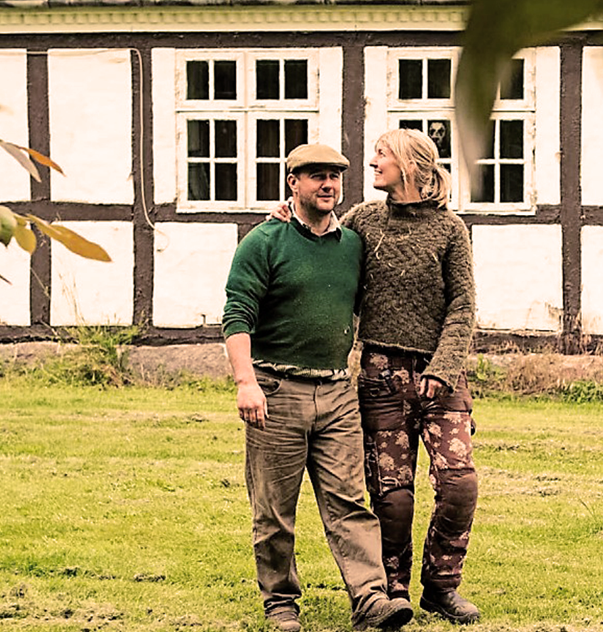
Gården, som Hindsholm Gårdbutik & Delikatesse er en del af, hedder Stålbækgård. Det er en over 200 år gammel udflyttergård fra Martofte, som vi overtog i 2013. Vi er i gang med nænsomt at renoverer gården samtidig med at vi udvikler og plejer gårdbutikken, dyre-besætningen og dyrkningen af afgrøder. Arbejdet med hovedbygningen træder ofte lidt i baggrunden så dyrene, afgrøderne, butikken og selvfølgelig kunderne, får den kærlighed og opmærksomhed der skal til.
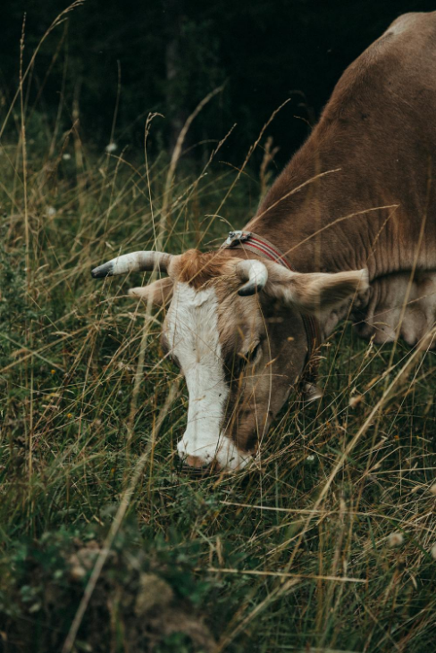
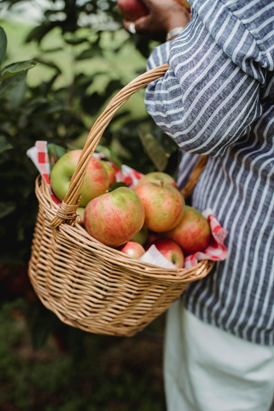
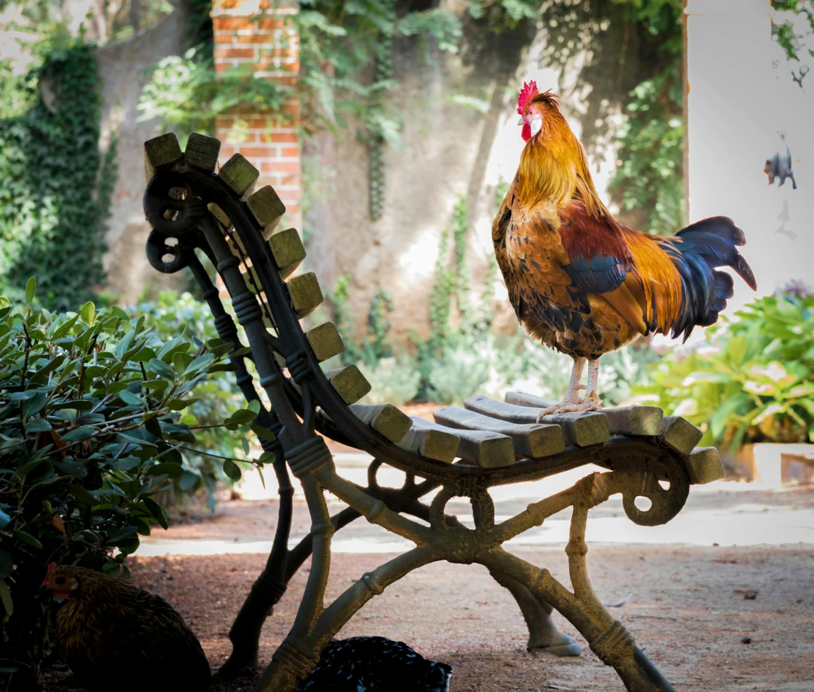
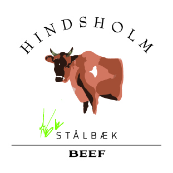
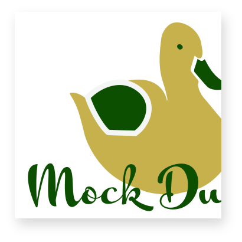
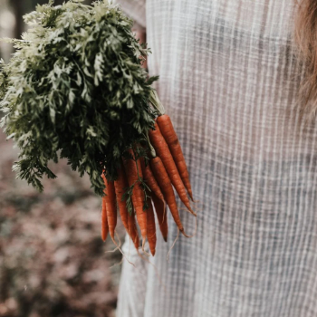
Her på gården har vi jerseykøer. Vi bruger dem ikke til at producere mælk, selvom jersey koen er fremragende til det. Vi har i stedet et par ammetanter som er pensionerede malkekøer – de passer på deres egne kalve samt adopterede tyrekalve som ikke har værdi i mælkeproduktionen.
Vi slagter vores ungtyre når de er ca. 1–2 år gamle, og de giver et fantastisk stykke kød. Grunden til at jersey koen ikke er klassificeret som et kødkvæg er ikke, at de ikke laver et godt stykke kød – men at de ikke laver nok kød hurtigt nok. Men her på gården har vi god tid.
Og når kødet får god tid til at vokse, fordi dyret ikke vokser så hurtigt, så får det masser af smag og saft. Samtidig har jerseykøerne en kortere fiberstruktur end andre køer, hvilket giver et meget mørt kød. Mørt, saftigt og smagfuldt – bedre bliver det ikke. Vi kalder det Hindsholm Beef.
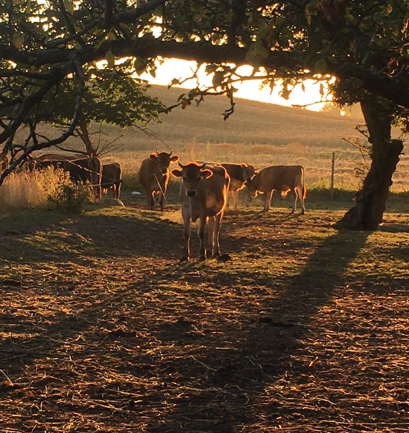
Vi har også noget til dem som ikke spiser kød. Vi har nemlig udviklet vores egen økologiske mockduck som vi også sælger i butikken. Du kan også besøge duck'n fries og få os til at tilberede det for dig!
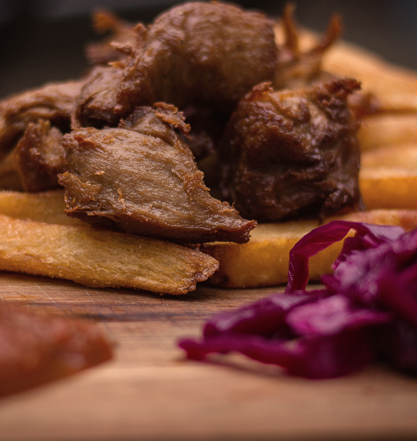
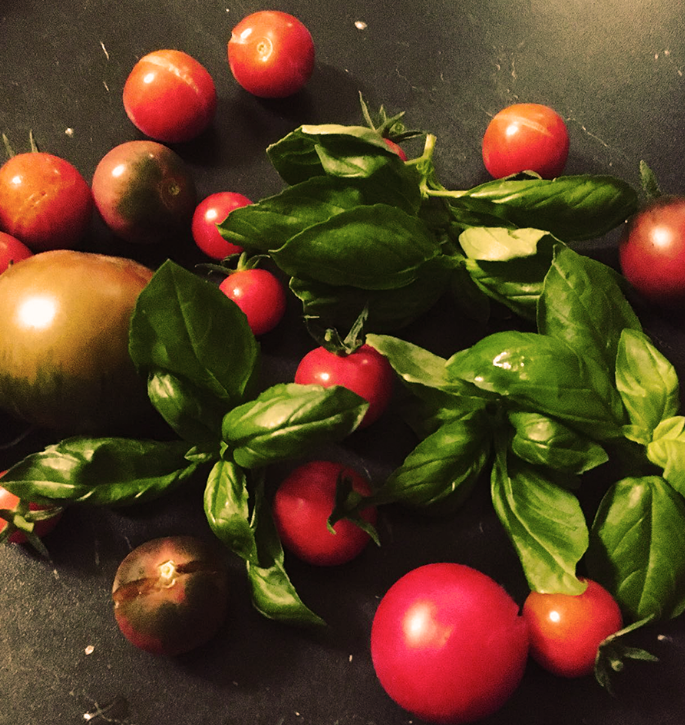
Vi dyrker et væld af forskellige frugter og grøntsager her på gården. Tingene gror mellem hinanden og i balancerede mængder så der ikke opstår større områder med monokulturer som er uhensigtsmæssigt for planterne og jorden. Vi sprøjter ikke afgrøderne og gøder så vidt muligt med gødning fra dyrene. Afgrøderne sås og luges via håndkraft og vi arbejder på en model der er tæt på naturens egen så arbejdsmængden ikke vokser os over hovedet. Drivhuset, som vi har bygget af genbrugs materialer, giver ekstra varme til tomater og basilikum og chiliplanterne får i år deres eget lille væksthus.
Udover de dyr som indgår i produktionen har vi på gården også et vekslende antal katte som alle er ansat med kost og logi, deres arbejde består i at holde bestanden af mus mm nede hvilket de gør yderst professionelt. Hunden Ellie, holder et åbent øje med alt hvad der foregår på gården. Hun er en glad og godmodig hund der elsker katte og høns.
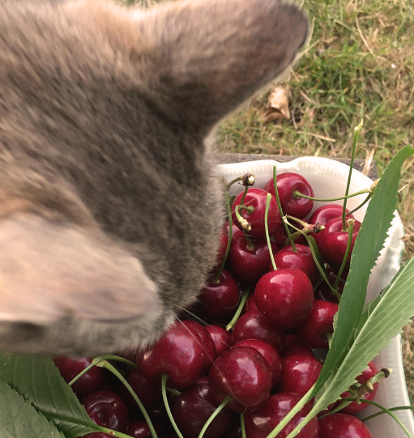
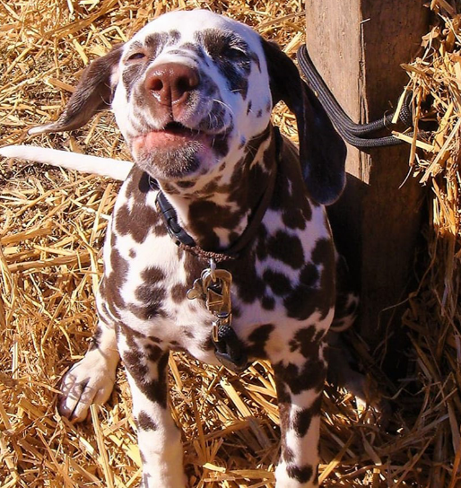
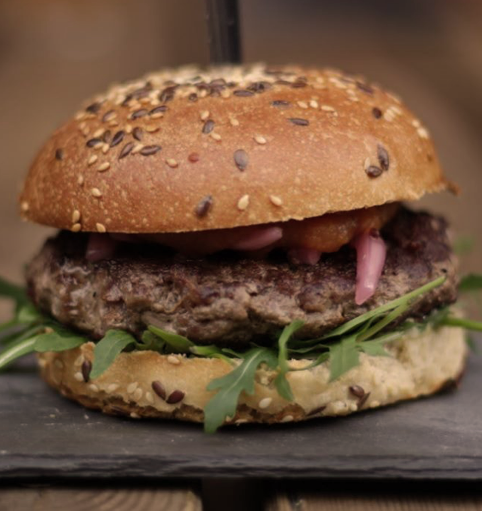